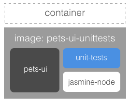
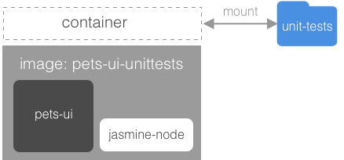
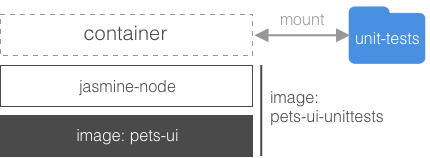
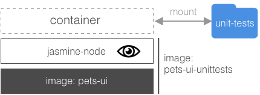

Unit Tests
Unit tests are by their nature tightly coupled to the code under test. Thus they need to run in the same container as the code we want to test.
The project folder for this exercise is ~/ddev-labs/unit-tests.
Extending the Node JS UI
We want to add some functionality to our Node based UI for which we can write unit tests. We also want to add some helper code to smooth the unit-test experience.
Open
ui/src/server.jsin your editor and replace the last two lines:app.listen(3000, '0.0.0.0'); console.log("Listening at 0.0.0.0:3000");with this:
var server = app.listen(3000, '0.0.0.0', function(){ console.log("Express server listening on 0.0.0.0:3000"); });Add a function
stopto theexportsobject as follows:exports.stop = function(){ server.close(); }This is a pure helper function that will be used later by our unit-test code.
Add a file
ui/src/primes.jswhich contains the definition of the prime numbers algorithm:exports.isPrime = function(number){ for(var i = 2; i < number/2; i++) { if(number % i === 0) { return false; } } return number > 1; }Add an endpoint to the
ui/src/server.jsfile which uses the above functionisPrimeto test for prime numbers:app.get('/isPrime/:number', function(req, res){ res.status(200).send(primes.isPrime(req.params.number)+'\n'); });and also add an import statement at the top of the file:
var primes = require('./primes.js');Here is how
ui/src/server.jscould look like after the changes:var express = require('express'); var request=require('request'); var mustacheExpress = require('mustache-express'); var os = require('os'); var primes = require('./primes.js'); var app = express(); app.set('view engine', 'html'); app.engine('html', mustacheExpress()); // register file extension app.set('views', __dirname); app.get('/',function(req,res){ res.status(200).send('Pets Demo Application'); }); app.get('/pet',function(req,res){ var hostname = os.hostname(); getPet(function(url){ res.render('index', { url: url, hostname: hostname }); }) }); app.get('/isPrime/:number', function(req, res){ res.status(200).send(primes.isPrime(req.params.number)+'\n' ); }); var getPet = function(callback) { request.get('http://api:8080/api/pet', function(err, res, body){ url = JSON.parse(body).url; callback(url); }); } var server = app.listen(3000, '0.0.0.0', function(){ console.log("Express server listening on 0.0.0.0:3000"); }); exports.stop = function(){ server.close(); }Build the image for this app:
ubuntu@infra:~$ cd ~/ddev-labs/unit-tests/ui ubuntu@infra:~/ddev-labs/unit-tests/ui$ docker image build -t pets-ui .Run the app:
ubuntu@infra:~/ddev-labs/unit-tests/ui$ docker container run \ --rm -it -p 3000:3000 pets-uiIn another terminal window use
curlto find out whether 7 is a prime number:ubuntu@infra:~$ curl localhost:3000/isPrime/7Stop the container with
docker container stop <container ID>.
Adding Unit Tests
In this part, we will build an image that includes our application, the unittests, and a test framework like following figure shows:
/
In the folder
unit-tests/uiwe have added a subfolderspecs.Open the file
ui/specs/primes-spec.jsand add this content:var sut = require('../src/primes.js'); describe("when evaluating if a given number is a prime", function(){ describe("when the number is a prime", function(){ it("should return 'true'", function(){ expect(sut.isPrime(7)).toBe(true); }); }); });We're using Jasmin (https://jasmine.github.io/) as our test framework. The variable name
sutstands for system under test and is often used to refer to the component or functionality to be tested.Open the file
ui/Dockerfile-unittestsand note that (compared toui/Dockerfile) we have added the following:RUN npm install -g jasmine-nodeas the second line. This installs
jasmine-nodewhich we need to be able to execute the tests.We also added a line to copy the specs into the image (line 8):
COPY ./specs /app/specsOpen the file
ui/package.jsonand note that we extended thescriptblock with a newtestscript:... "scripts": { "start": "node src/server.js", "test": "jasmine-node specs" }, ...Build the image:
ubuntu@infra:~$ cd ~/ddev-labs/unit-tests/ui ubuntu@infra:~/ddev-labs/unit-tests/ui$ docker image build -t pets-ui-unittests \ -f Dockerfile-unittests .Run the container with the instruction to execute the unit tests instead of just running the app:
ubuntu@infra:~/ddev-labs/unit-tests/ui$ docker container run \ --rm -it pets-ui-unittests npm run test > pets@1.0.0 test /app > jasmine-node specs . Finished in 0.008 seconds 1 test, 1 assertion, 0 failures, 0 skipped
Not Shipping Unit Tests
In the example above, we built our unit test code right into our image. Of course we don't want testing code (or tooling) going into our production images; in what follows we explore how to avoid this.
Mounting test code
One options is to mount test code during the testing phase, rather than including it in our image. To make things simpler we need to adhere to some standards in where we put our files containing test code and how we name them. In our case, unit tests will always reside in a sub-folder called specs like following figure shows:
/
In the
uifolder create a file.dockerignorewith the following content:node_modules specsThis will instruct Docker to not include folders named
node_modulesandspecs(including all their content) in the context when building the image.Change the two copy statements that copy the
srcandspecsfolders inDockerfile-unittestsinto a single one like this:COPY . /appBuild the image.
ubuntu@infra:~/ddev-labs/unit-tests/ui$ docker image build \ -t pets-ui-unittests -f Dockerfile-unittests .Run an interactive container based on this image:
ubuntu@infra:~/ddev-labs/unit-tests/ui$ docker container run \ --rm -it pets-ui-unittests shWhile inside the container make sure the
specsfolder was not copied into the container, despite theCOPY . /appcommand you added to your Dockerfile; the.dockerignorerule preventedspecsfrom being copied in.Quit the container via
exit.Now run the tests by mounting them into the container at runtime:
ubuntu@infra:~/ddev-labs/unit-tests/ui$ docker container run --rm -it \ -v $(pwd)/specs:/app/specs \ pets-ui-unittests npm run testThe tests should execute and produce the same output as in the previous exercise.
Creating a Test Image
If we also want to avoid that our production image contains any libraries that are only needed for testing (e.g. jasmine-node in our case) then we can build a special test image that inherits from the production image like following figure shows:
/
Build the production image, based on
ui/Dockerfile:ubuntu@infra:~/ddev-labs/unit-tests/ui$ docker image build -t pets-ui .Modify our
Dockerfile-unitteststo look like this:FROM pets-ui RUN npm install jasmine-node -g CMD ["npm", "run", "test"]Build the test image using this new Dockerfile (note the
-fparameter):ubuntu@infra:~/ddev-labs/unit-tests/ui$ docker image build -t pets-ui-unittests \ -f Dockerfile-unittests .Now run an instance of this image to execute the tests (don't forget to mount the volume with the tests):
ubuntu@infra:~/ddev-labs/unit-tests/ui$ docker container run --rm -it \ -v $(pwd)/specs:/app/specs \ pets-ui-unittestsWe have the production image
pets-uiwhich only contains production code and dependencies and a separate imagepets-ui-unittestswhich inherits from the former and additionally contains the necessary dependencies that are needed to execute tests. We also re-defined theCMDto executenpm run testwhen running a container.
Edit and Continue When Writing Tests
Currently we have to re-run the test container each time we modify code or add a new test. To improve the process a bit we can run the container with a slightly modified entrypoint to configure jasmine-node to auto-test on change (see https://github.com/mhevery/jasmine-node for details):
/
Add a
test-watchscript to theui/package.jsonfile:... "scripts": { "start": "node src/server.js", "test-watch": "jasmine-node specs --autotest --watch ./**/*.js", "test": "jasmine-node specs" }, ...Rebuild the image:
ubuntu@infra:~/ddev-labs/unit-tests/ui$ docker image build -t pets-ui-unittests \ -f Dockerfile-unittests .Execute the test container with the
test-watchscript:ubuntu@infra:~/ddev-labs/unit-tests/ui$ docker container run --rm -it \ -v $(pwd):/app \ pets-ui-unittests npm run test-watchNote that since
test-watchis not a standard script we need to run it with the commandnpm run test-watchand not justnpm test-watch.The output should now look like this:
ubuntu@infra:~/ddev-labs/unit-tests/ui$ docker container run --rm -it \ > -v $(pwd):/app \ > pets-ui-unittests npm run test-watch > pets@1.0.0 test-watch /app > jasmine-node specs --autotest --watch ./**/*.js . Finished in 0.007 seconds 1 test, 1 assertion, 0 failures, 0 skipped Watching for changes in ./specs/primes-spec.js Watching for changes in ./src/primes.js Watching for changes in ./src/server.js Watching for changes in /app/specsNow let the container run and add a new test to the file
ui/specs/primes-spec.js, just after the first one, which makes sure that if we provide a non-prime number the answer will befalse. The result should look like this:var sut = require('../src/primes.js'); describe("when evaluating if a given number is a prime", function(){ describe("when the number is a prime", function(){ it("should return 'true'", function(){ expect(sut.isPrime(11)).toBe(true); }); }); describe("when the number is a not prime", function(){ it("should return 'false'", function(){ expect(sut.isPrime(4)).toBe(false); }); }); });Notice that immediately after you saved the above changes the tests were executed again - but this one failed!
Apparently there is a bug in
ui/src/primes.js. Fix it by replacing the<sign by a<=sign, and save the fix.Notice that again upon saving the file the tests are re-executed, this time hopefully all passing.
Optional Challenge: Unit Testing a .NET Core Application
This exercise is optional; give it a try if you have some extra time after finishing the examples above.
Creating a .NET Core application
In the following few exercises we're going to create a simple .NET Core service with unit tests and containerize them similarly to what we have done for the Node Express application above.
Create a folder
~/ddev-labs/unit-test-dot-net.Inside this folder run the following command:
ubuntu@infra:~/ddev-labs/unit-test-dot-net$ docker container run --rm -it \ -v $(pwd):/app \ -w /app microsoft/dotnet:1.1-sdk bashInside the container create a .NET class library as follows:
/app# mkdir PrimeService /app# cd PrimeService /app/PrimeService# dotnet new classlibNotice that this creates a folder
PrimeServicecontaining filesClass1.csandPrimeService.csprojalso on the host since we have volume mounted the host directory.In the host file system rename the file
Class1.cstoPrimeService.cs.Replace its content with the following one:
using System; namespace Prime.Services { public class PrimeService { public bool IsPrime(int candidate) { throw new NotImplementedException("Please create a test first"); } } }Back in the running .NET container create a folder
/app/PrimeService.Testsand navigate into this folder:/app/PrimeService# mkdir /app/PrimeService.Tests /app/PrimeService# cd /app/PrimeService.TestsMake a new test project in this folder:
/app/PrimeService.Tests# dotnet new classlibThis should have added two files
Class1.csandPrimeService.Tests.csprojto the folder.Now we need to add the
PrimeServiceproject as a reference to the test project:/app/PrimeService.Tests# dotnet add reference ../PrimeService/PrimeService.csprojOpen the file
PrimeService.Tests.csprojand change it to look like this:<Project Sdk="Microsoft.NET.Sdk"> <PropertyGroup> <TargetFramework>netcoreapp1.1</TargetFramework> </PropertyGroup> <ItemGroup> <PackageReference Include="xunit" Version="2.3.0-beta2-build3683" /> <DotNetCliToolReference Include="dotnet-xunit" Version="2.3.0-beta2-build3683" /> </ItemGroup> <ItemGroup> <ProjectReference Include="..\PrimeService\PrimeService.csproj" /> </ItemGroup> </Project>Note: Please refer to this link for more info: https://xunit.github.io/docs/getting-started-dotnet-core
Rename the class
Class1.cstoPrimeService_IsPrimeShould.csand add the following content:using Xunit; using Prime.Services; namespace Prime.UnitTests.Services { public class PrimeService_IsPrimeShould { private readonly PrimeService _primeService; public PrimeService_IsPrimeShould() { _primeService = new PrimeService(); } [Fact] public void ReturnFalseGivenValueOf1() { var result = _primeService.IsPrime(1); Assert.False(result, $"1 should not be prime"); } } }Gist: http://bit.ly/2v9B3ua
Back in the container, run the restore command to download all dependencies:
/app/PrimeService.Tests# dotnet restoreThe output should look like this:
Restoring packages for /app/PrimeService.Tests/PrimeService.Tests.csproj... Restoring packages for /app/PrimeService/PrimeService.csproj... Lock file has not changed. Skipping lock file write. Path: /app/PrimeService/obj/project.assets.json Restore completed in 199.38 ms for /app/PrimeService/PrimeService.csproj. Restoring packages for /app/PrimeService.Tests/PrimeService.Tests.csproj... Restore completed in 184.76 ms for /app/PrimeService.Tests/PrimeService.Tests.csproj. Generating MSBuild file /app/PrimeService.Tests/obj/PrimeService.Tests.csproj.nuget.g.props. Generating MSBuild file /app/PrimeService.Tests/obj/PrimeService.Tests.csproj.nuget.g.targets. Writing lock file to disk. Path: /app/PrimeService.Tests/obj/project.assets.json Restore completed in 536.08 ms for /app/PrimeService.Tests/PrimeService.Tests.csproj. NuGet Config files used: /root/.nuget/NuGet/NuGet.Config Feeds used: https://api.nuget.org/v3/index.json Installed: 20 package(s) to /app/PrimeService/PrimeService.Tests/PrimeService.Tests.csprojFinally we can try to run the tests:
/app/PrimeService.Tests# dotnet xunitThis should result in a failure with a message [snippet]:
... xUnit.net Console Runner (64-bit .NET Core 4.6.25211.01) Discovering: PrimeService.Tests Discovered: PrimeService.Tests Starting: PrimeService.Tests Prime.UnitTests.Services.PrimeService_IsPrimeShould.ReturnFalseGivenValueOf1 [FAIL] System.NotImplementedException : Please create a test first ...Implement code in the class
PrimeService.csto handle the test correctly:public bool IsPrime(int candidate) { if (candidate == 1) { return false; } throw new NotImplementedException("Please create a test first"); }Run the tests again. This time it should succeed. Here's a snippet from the output:
... xUnit.net Console Runner (64-bit .NET Core 4.6.25211.01) Discovering: PrimeService.Tests Discovered: PrimeService.Tests Starting: PrimeService.Tests Finished: PrimeService.Tests === TEST EXECUTION SUMMARY === PrimeService.Tests Total: 1, Errors: 0, Failed: 0, Skipped: 0, Time: 0.162sExit the .NET container by entering
exitin the shell.
Containerizing the .NET Application
Now that we have interactively created the code for our .NET project we want to containerize it.
Add a
Dockerfileto the project folderunit-test-dot-netwith this content:FROM microsoft/dotnet:1.1-sdk RUN mkdir -p /app COPY ./PrimeService/PrimeService.csproj /app/PrimeService/ COPY ./PrimeService.Tests/PrimeService.Tests.csproj /app/PrimeService.Tests/ WORKDIR /app/PrimeService.Tests RUN dotnet restore COPY . /app ENTRYPOINT dotnet xunitBuild the app:
ubuntu@infra:~/ddev-labs/unit-test-dot-net$ docker image build -t dot-net-app .Run a container from this image:
ubuntu@infra:~/ddev-labs/unit-test-dot-net$ docker container run --rm -it dot-net-appThe tests should run and the output should be the same as when we ran the tests interactively in the .NET container earlier on.
Adding Edit and Continue Experience
Instead of always restarting the container when we have added or changed some code we can do better and use the watcher tool provided by Microsoft.
Add the following snippet to the file
PrimeService.Tests.csproj:<ItemGroup> <DotNetCliToolReference Include="Microsoft.DotNet.Watcher.Tools" Version="1.0.0" /> </ItemGroup>Change the
ENTRYPOINTin the Dockerfile as follows:ENTRYPOINT dotnet watch xunitBuild the image.
Run the container using volume mounting:
ubuntu@infra:~/ddev-labs/unit-test-dot-net$ docker container run --rm -it \ -v $(pwd):/app dot-net-appwe should see the following output:
watch : Started Detecting target frameworks in PrimeService.Tests.csproj... Building for framework netcoreapp1.1... PrimeService -> /app/PrimeService/bin/Debug/netstandard1.4/PrimeService.dll PrimeService.Tests -> /app/PrimeService.Tests/bin/Debug/netcoreapp1.1/PrimeService.Tests.dll Running .NET Core tests for framework netcoreapp1.1... xUnit.net Console Runner (64-bit .NET Core 4.6.25211.01) Discovering: PrimeService.Tests Discovered: PrimeService.Tests Starting: PrimeService.Tests Finished: PrimeService.Tests === TEST EXECUTION SUMMARY === PrimeService.Tests Total: 1, Errors: 0, Failed: 0, Skipped: 0, Time: 0.160sAdd another test to the file
PrimeService_IsPrimeShould.csand save:[Theory] [InlineData(-1)] [InlineData(0)] [InlineData(1)] public void ReturnFalseGivenValuesLessThan2(int value) { var result = _primeService.IsPrime(value); Assert.False(result, $"{value} should not be prime"); }Observe that the tests are run again upon saving of the changes. Of course the test will fail since our production code is not yet handling those scenarios.
Add the code to make the test succeed. In the class
PrimeService.cschange the first line of theIsPrimefunction to:if (candidate < 2)After a short timeout the tests should be rerun. This time they should succeed (4 Passed).
Freeing the application image from test code
Once again, if we don't want to ship test code with the production image we can use the same technique that we used in the Node Express sample and create a special test image that inherits from the production image.
Move the
Dockerfileinto the subfolderPrimeService.Change the
Dockerfileto look like this:FROM microsoft/dotnet:1.1-sdk RUN mkdir -p /app/PrimeService WORKDIR /app/PrimeService COPY ./PrimeService.csproj /app/PrimeService/ RUN dotnet restore COPY . /app/PrimeServiceMake sure in the terminal you're in the project folder
unit-test-dot-net.Build the production image:
ubuntu@infra:~/ddev-labs/unit-test-dot-net$ docker image build \ -t dot-net-app PrimeServiceTo the project folder
unit-test-dot-netadd a fileDockerfile-unitwith this content:FROM dot-net-app RUN mkdir /app/PrimeService.Tests WORKDIR /app/PrimeService.Tests COPY ./PrimeService.Tests/PrimeService.Tests.csproj /app/PrimeService.Tests/ RUN dotnet restore ENTRYPOINT dotnet watch xunitBuild the test image:
ubuntu@infra:~/ddev-labs/unit-test-dot-net$ docker image build \ -t unit-test-dot-net-app \ -f Dockerfile-unit .Run the test container:
ubuntu@infra:~/ddev-labs/unit-test-dot-net$ docker container run --rm -it \ -v $(pwd):/app unit-test-dot-net-appThe 4 tests (we have so far) should be executed and pass.
Add some additional tests and make sure they automatically run when you save.
Conclusion
In this exercise we have learned how we can write unit tests against the UI part of our workshop sample. We also have discussed how we can package and run those tests.
We also have shown techniques on how to improve the workflow when writing code and authoring tests for it such as that a typical "edit and continue" experience is achieved.
Of course we cannot just write unit tests in JavaScript using e.g. Jasmin but in any of the popular languages like C#/.NET, Java or Python. The test code ideally is written in the same language as the code under test.